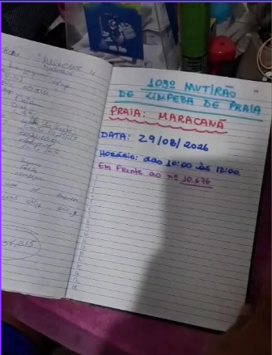

Desafios identificado
Alessandra - Administradora
Registra informações sobre as atividades da ONG de forma manual e desorganizada.
Maria - Voluntária
Avisos e comunicados ficam perdidos nas conversas do WhatsApp.
Ricardo - Coordenador
Tempo gasto reunindo dados para a prestação de contas